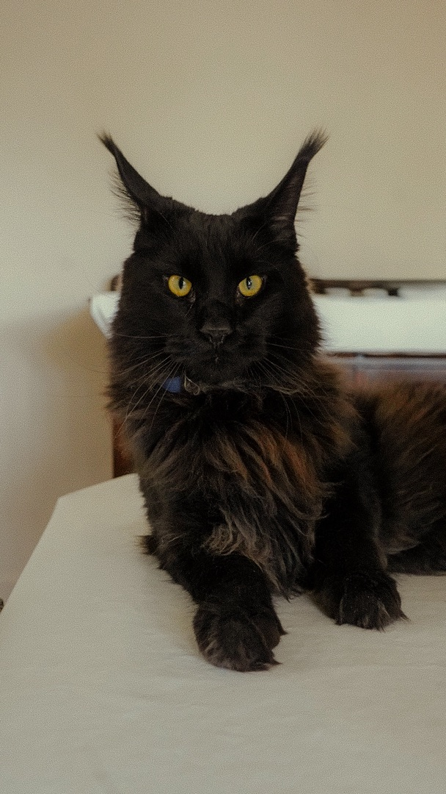
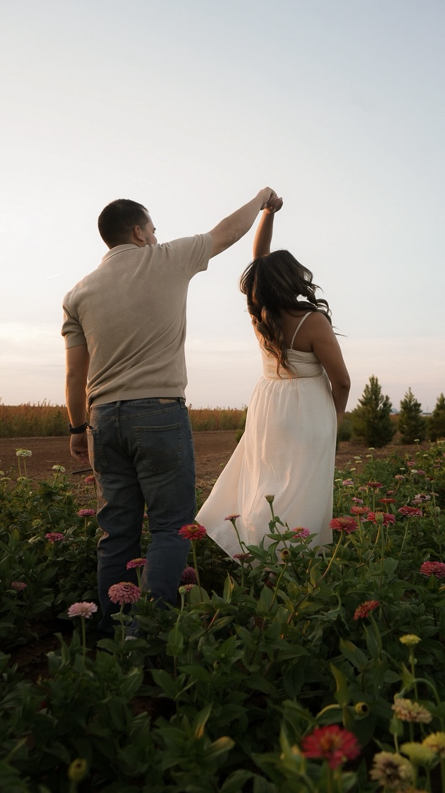
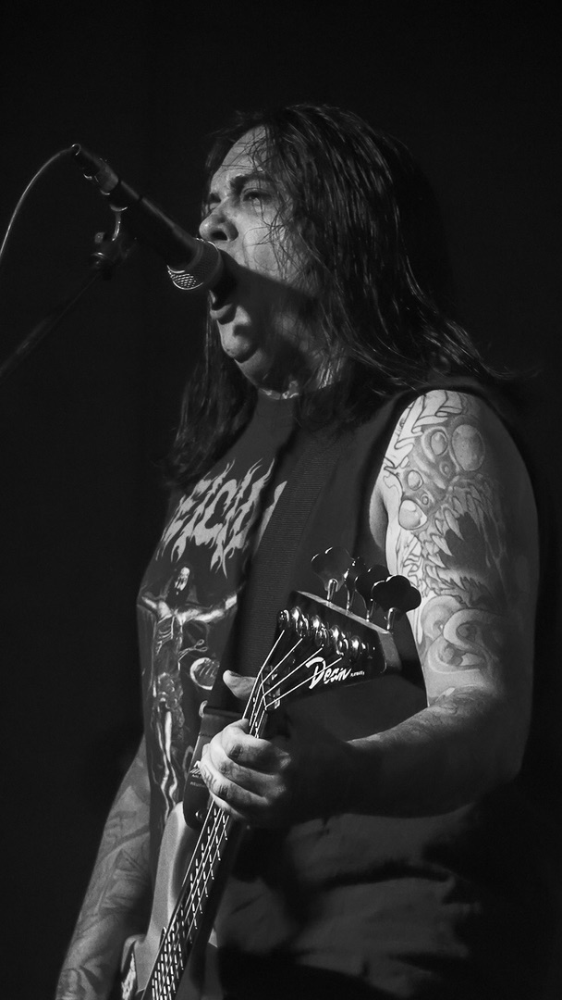
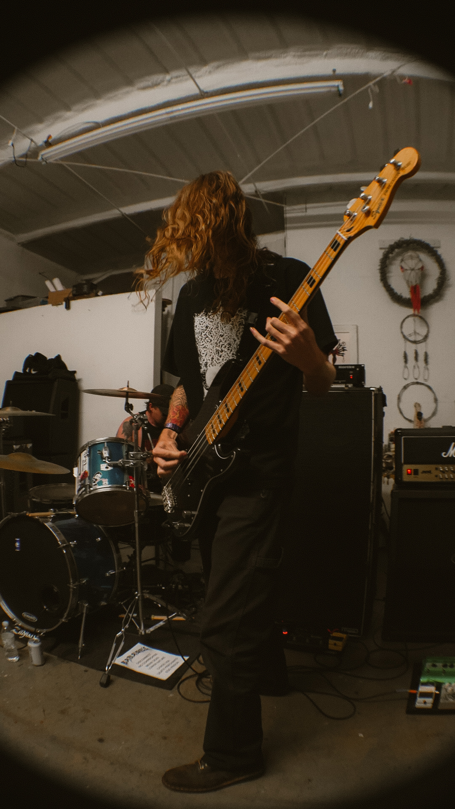
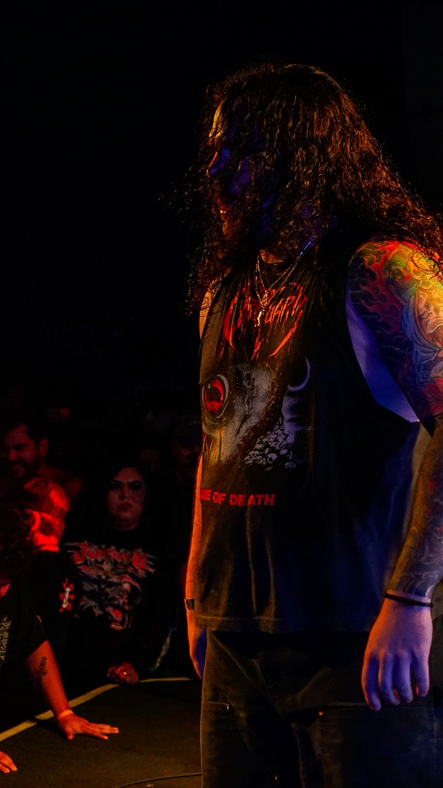
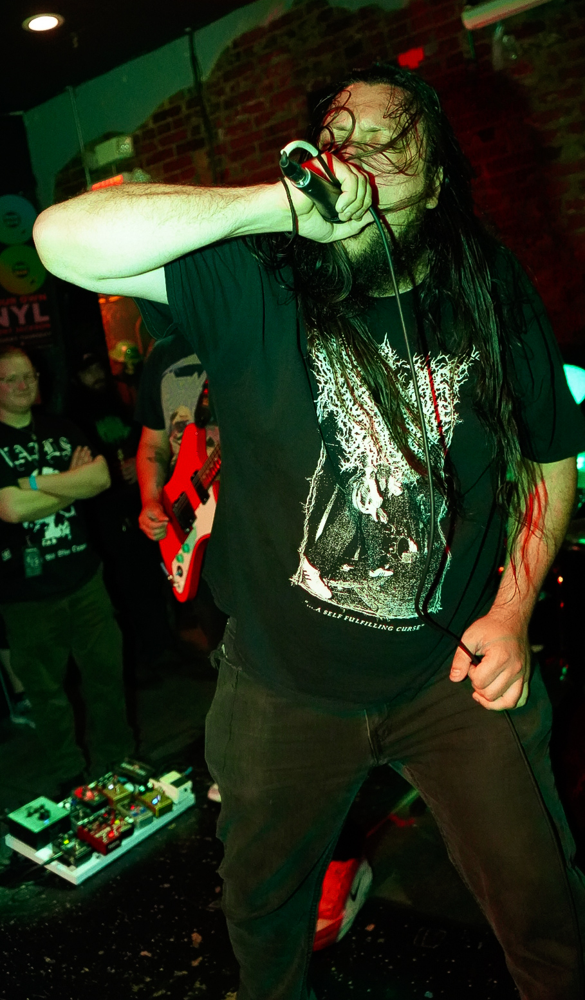

My Collection
This is my curated collection of things that I love. Each item here represents something meaningful to me, whether it's a favorite book, game, album, rock, mineral, tool, art, or memory. This collection showcases how responsive design allows me to adapt my content across all screen sizes.

Maine coon
Photo by me
This is one of my favorite photos that ive taken. I have never seen a Maine Coon cat in person before. They are so majestic and playful.They have a beautiful fur and eyes. I was very lucky to be able to take care of this Maine Coon while my coworker was gone on vacation!

Family Photos
Photos by me
This was one of my first family photos I took. I was so excited to capture these moments for this beautiful family, who also happen to be my friends! We went to Sky Gardens in Levelland to take these photos. I also had the honor of having Makayla as a boss for 3 years prior to this shoot!

Band Photos
Photos by me
This was a picture I took of my friend's band, Gorred. They played a show with Soul Fly, which if you are not aware, one of the best guitarist in the world, Max Cavalera, plays in this band. The people in Soul Fly told me that I could only take pictures for the first two opening bands. They said i was not able to use my flash, and, i could only take pictures during the first two songs. This made me way more nervous, especically since I was hired to take pictures, and i heavily rely on my camera flash. After I edited these pictures, i was extremely relieved and satisfied with the results, and so where the bands.

First Solo Show
Photos by me
This was a picture that I took at the very fist show that ive run solo. This was actually pretty recent. I wasnt planning to take any pictures because of how busy I was, but I did get this one of my friend Josh!

Merauder Show
Photos by me
This was a picture from my first big show. I was asked to be on the media team for a show with Thu the Ashes, Fear of Loss, Tiger SPlitter, Tribal Gaze, Judiciary, and Merauder. this was Merauders 30 year anniversary. This show got me a lot of recognition and helped me get more gigs in the future.

Tour
My First Tour
This was taken on my first tour with the band Dysmorphia, Aneusrym, and Dread. I was their Tour Manager and their photographer! We were on tour for a little more than two weeks. I cannot wait to get to do this again.